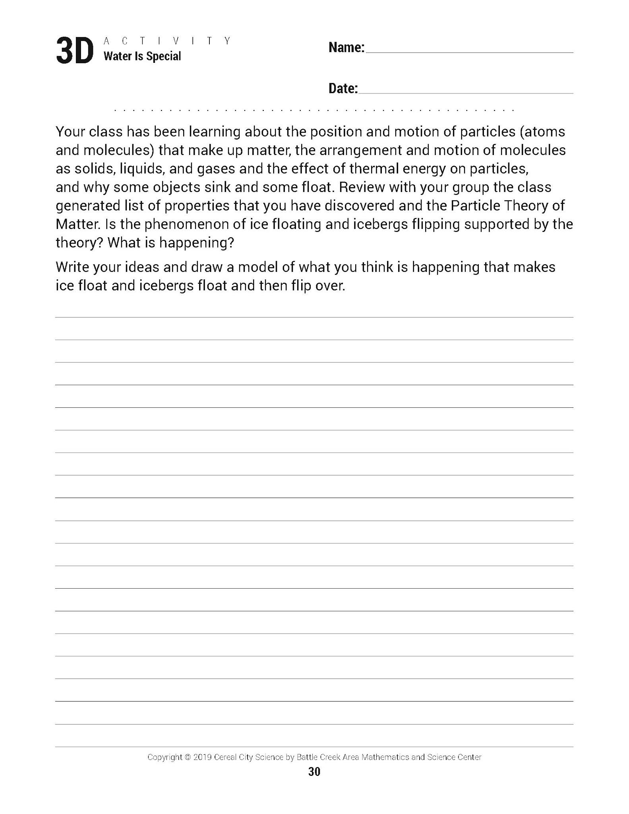
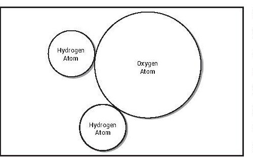
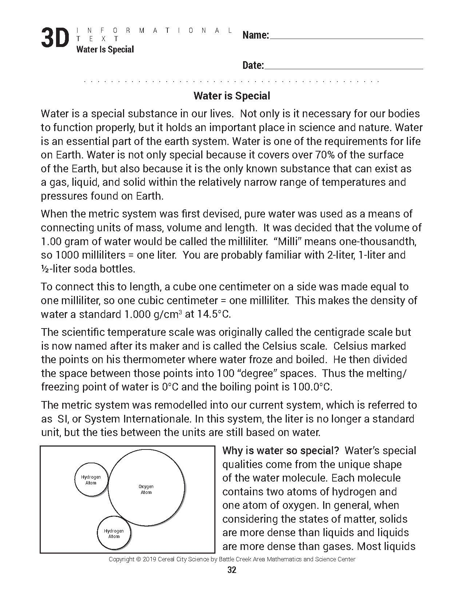

Your class has been learning about the position and motion of particles (atoms and molecules) that make up matter, the arrangement and motion of molecules as solids, liquids, and gases and the effect of thermal energy on particles, and why some objects sink and some float. Review with your group the class generated list of properties that you have discovered and the Particle Theory of Matter. Is the phenomenon of ice floating and icebergs flipping supported by the theory? What is happening? Write your ideas and draw a model of what you think is happening that makes ice float and icebergs float and then flip over.
Compare with original journal page 30
This is the unmarked scanned page for checking original diagrams, exact wording, or layout. The editable HTML content is above.

Activity 3D • Water Is SpecialJournal page 31 of 84
Water is Special Water is a special substance in our lives. Not only is it necessary for our bodies to function properly, but it holds an important place in science and nature. Water is an essential part of the earth system. Water is one of the requirements for life on Earth. Water is not only special because it covers over 70% of the surface of the Earth, but also because it is the only known substance that can exist as a gas, liquid, and solid within the relatively narrow range of temperatures and pressures found on Earth. When the metric system was first devised, pure water was used as a means of connecting units of mass, volume and length. It was decided that the volume of
1.00 gram of water would be called the milliliter. “Milli” means one-thousandth, so 1000 milliliters = one liter. You are probably familiar with 2-liter, 1-liter and soda bottles. To connect this to length, a cube one centimeter on a side was made equal to one milliliter, so one cubic centimeter = one milliliter. This makes the density of water a standard 1.000 g/cm? at 14.5°C. The scientific temperature scale was originally called the centigrade scale but is now named after its maker and is called the Celsius scale. Celsius marked the points on his thermometer where water froze and boiled. He then divided the space between those points into 100 “degree” spaces. Thus the melting/ freezing point of water is 0°C and the boiling point is 100.0°C. The metric system was remodelled into our current system, which is referred to as Sl, or System Internationale. In this system, the liter is no longer a standard unit, but the ties between the units are still based on water. Why is water so special? Water's special qualities come from the unique shape (ar) of the water molecule. Each molecule contains two atoms of hydrogen and / one atom of oxygen. In general, when considering the states of matter, solids are more dense than liquids and liquids are more dense than gases. Most liquids

Original water-molecule diagram from the student journal.
Compare with original journal page 32
This is the unmarked scanned page for checking original diagrams, exact wording, or layout. The editable HTML content is above.

Activity 3D • Water Is SpecialJournal page 33 of 84
contract when they become solids, but not water! Water expands when it freezes! Water is at its most dense when it is at 4°C, just above the freezing mark. When water is in its solid state (ice), the water molecules are packed close together so it can keep its shape. However, ice has a very regular pattern with the molecules rigidly apart from one another with bonds that form a crystalline lattice. (Insert picture) The crystals have a number of open regions and pockets that make the ice cube less dense than the liquid water. So it floats! This also means that, as ice forms, it stays at the top of a lake, and the water at the bottom will eventually become 4°C. If the solid water was the most dense part of water, the ice would form at the bottom of the lake, the lake would fill with ice, and all of the water creatures would die. No more fish, frogs, turtles, etc! Discussion Question: Why did scientists have to specify the temperature of the water when they defined its density?
Compare with original journal page 33
This is the unmarked scanned page for checking original diagrams, exact wording, or layout. The editable HTML content is above.